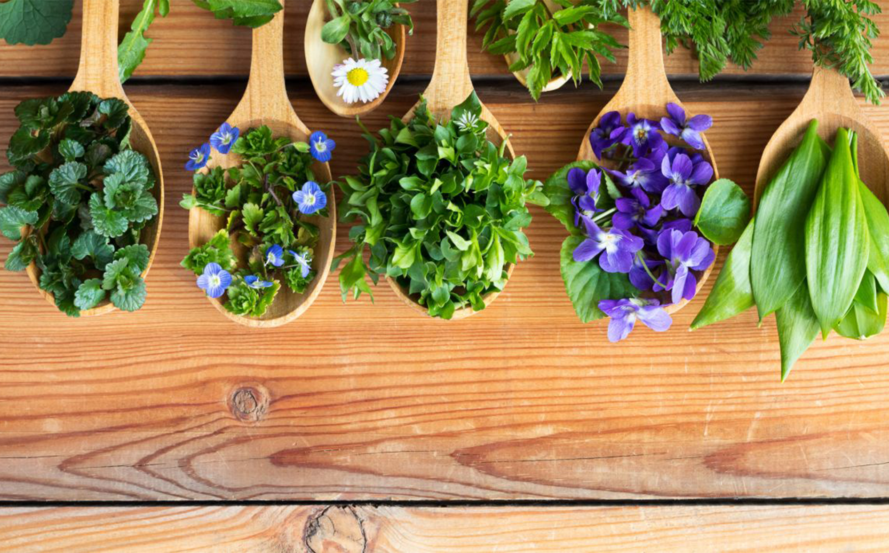
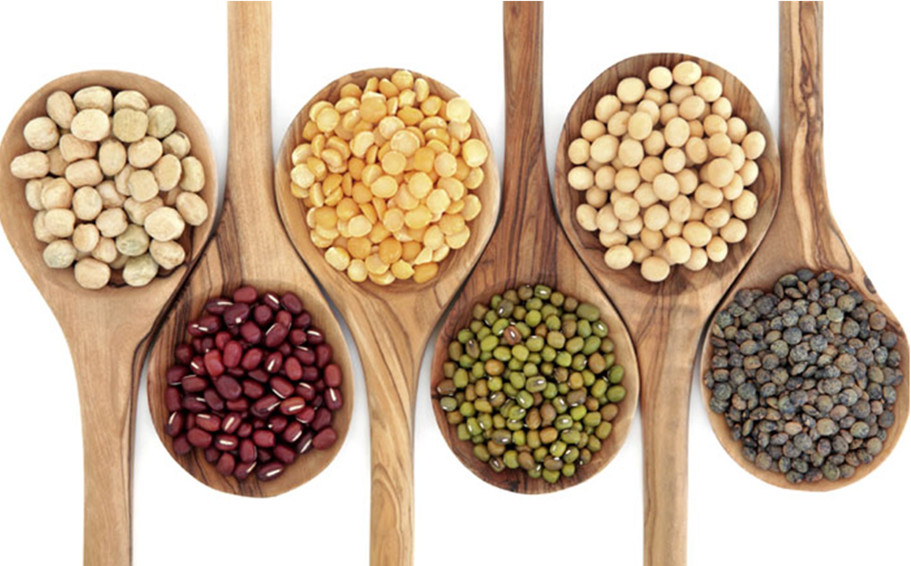

ESPECIAS
Pueden potenciar el sabor de una comida o servir de "ingrediente mágico" para volver memorable una receta.

HIERBAS
Las hiervas tienen propiedades que pueden ayudar a aliviar molestias y alteraciones menores.
